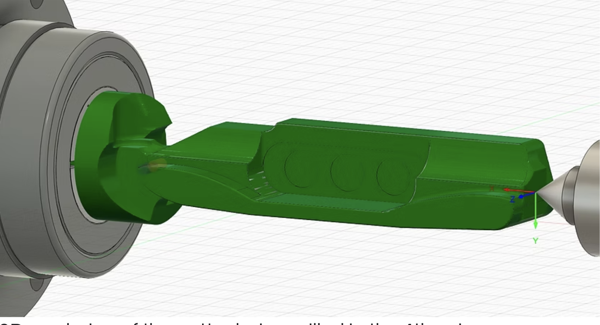
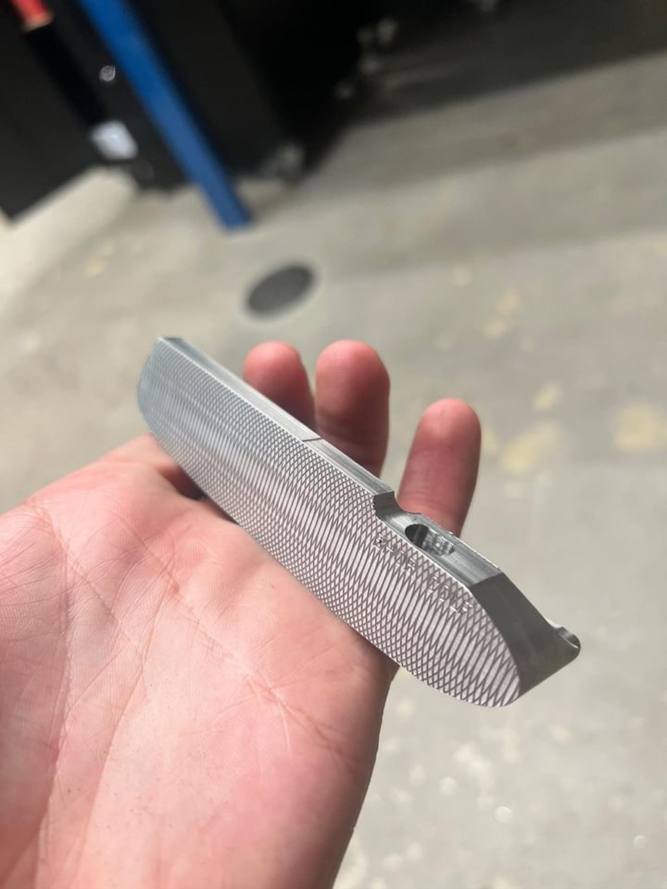
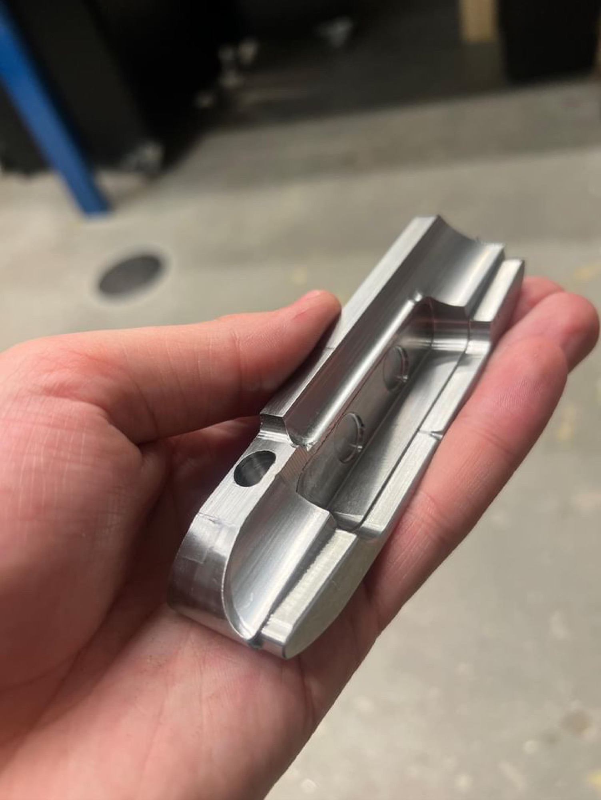
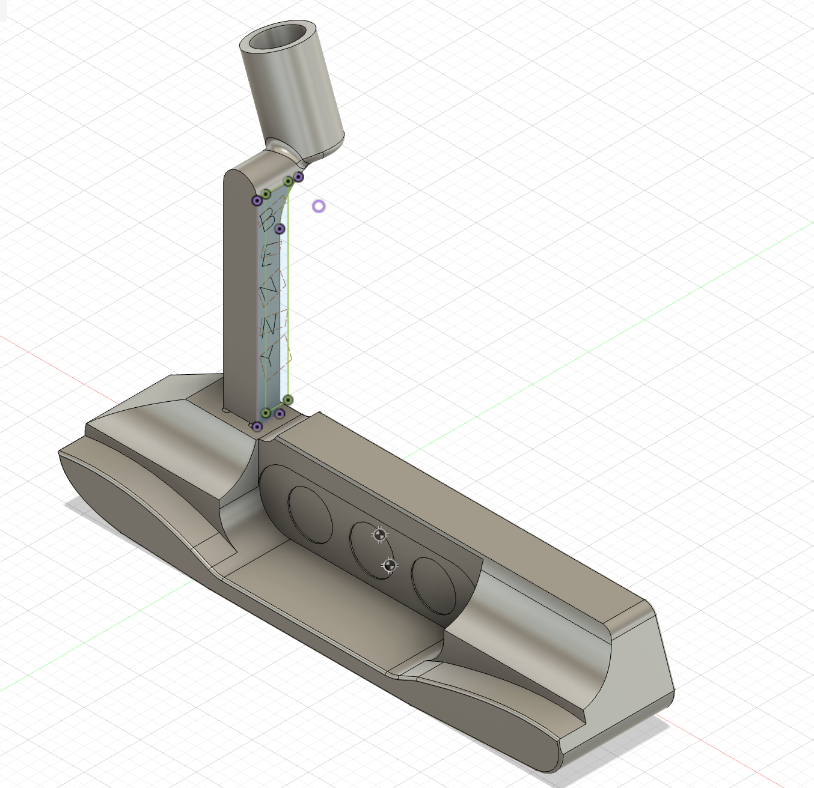

Once I got proficient in CAD and milling, I wanted to design and fabricate something I actually cared about using. I've always been into golf, so a putter was the obvious test of how far my machining and engineering skills had come.
Putters live or die on three things — shape, feel, and forgiveness. For a first putter, I went with a mallet head: the more forgiving shape to start with, and the one shown finished here.
Machining It
Most production putters are cast, or milled on a 5th axis. I didn't have that luxury, so I designed mine to be milled on a 4th axis instead, with the hosel machined separately and attached after the head was finished.




What's Next
This first version taught me a lot about what I'd change, so I've drawn up a completely different follow-up: a thinner blade, modeled after putters like the Scotty Cameron Newport 2 and Ping Anser, aimed at better feel — a CAD concept I'm hoping to mill next, not yet built. I'm also planning to chemically stain the 303 stainless on that one, which should give the head a blue hue.